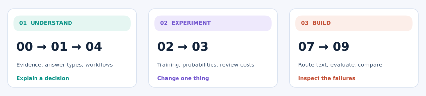

FIRST / UNDERSTAND
Just the main idea
Read 00 → 01 → 04. Skip code and equations on your first pass. Explain the distinction between a prediction and an action.
Begin without installation →How does a model turn evidence into a decision your software can use? Start with a support message. Follow the example. Try changing one thing.
A customer writes: “The export button crashes. I cannot finish my report.” Which team should help: technical, billing, or another team?
Provide the message and a focused question.
The model returns a typed result, such as probabilities over allowed queues.
Your code routes the message or asks for review. A valid answer can still be wrong.
Jev is TypeSafe AI's model for bounded judgments. The local examples in this course are teaching models; they do not reproduce Jev. Read the evidence and limits.

Read 00 → 01 → 04. Skip code and equations on your first pass. Explain the distinction between a prediction and an action.
Begin without installation →Try the playground, then lesson 03. Watch probabilities and review decisions change as you move a slider.
Make a prediction, then try it →Follow 02 → 03 → 07. Train a local text router, evaluate it, and inspect the mistakes. Basic Python helps.
Set up Python →Try rules, weighted word matching, and a learned classifier on the same messages. Then inspect a pair they cannot distinguish.
Open the optional comparison lab →Keep question types, worked calculations, decision costs, and common confusions on one page beside your notebook.
Open the quick reference →Compare six models on a fictional text task. Follow the training curves, compare held-out mistakes, and test whether changing word order changes the prediction. You can read the saved results first; a CPU is enough to run the experiment.
Open the PyTorch training lab →This lab trains educational models. It does not train Jev or reveal its private architecture.
You do not need to finish them in order. Each lesson tells you what to know first and includes a short self-check. The API and PyTorch labs are optional.
Choose a path, understand the evidence labels, and check your setup.
State, Choice, Score, and Noul. Valid output can still be wrong.
Train with NumPy, inspect tensor shapes, and see the decision boundaries.
Fit temperature on separate data and explore the costs of acting or reviewing.
Separate judgment, evidence retrieval, permissions, and deterministic rules.
Inspect the official request, validate answers, and enable a live call yourself.
Candidate scoring, isolated attention, shared work, and learning objectives.
Train a local text router on fictional tickets, then inspect held-out results and failures.
Worked answers with runnable checks, from softmax to label leakage.
Try rules, lexical prototypes, and a learned classifier on the same fictional messages.
Trace updates, compare word-order representations, and evaluate three seeds on a paired toy task.
The browser lessons show explanations and saved results. Select Show Python code when you want to see the implementation. Download the whole folder to keep the notebooks and helpers together.
Windows, macOS, and Linux setup →Predict a small change before you run it. Use the self-check before opening its answer. Understanding means explaining why, not just rerunning code.
Try 12 guided questions →Documentation checked 2026-10-01 · Sources · Data provenance · Maintainer guide